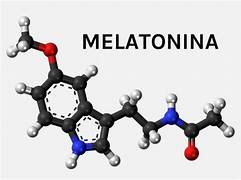

QUE ES LA MELATONINA
¿Qué es la melatonina?
La melatonina es una hormona producida naturalmente por el organismo
(en la glándula pineal del cerebro), que posee como principal función
regular el ciclo circadiano, estimulando el sueño al final del día.
Asimismo, la melatonina promueve el buen funcionamiento del organismo
y actúa como antioxidante.

La producción de melatonina se produce especialmente al final del día
cuando ya no hay estímulos luminosos y el metabolismo está más lento
lo que hace que su producción suceda principalmente en la noche
Por eso, a la hora de dormir, es importante evitar la luz, estímulos sonoros
o aromáticos que puedan acelerar el metabolismo y disminuir la producción de melatonina
regreso